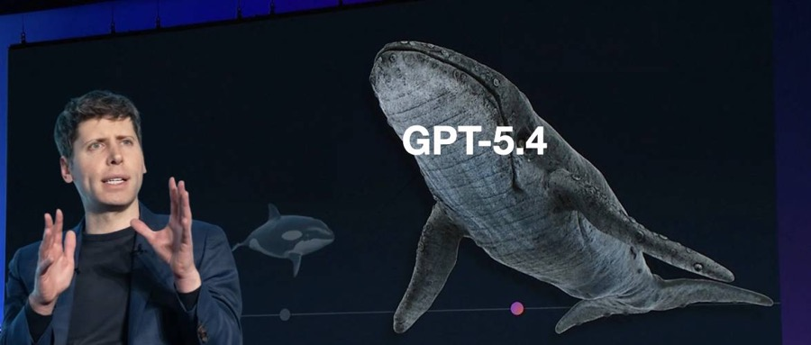
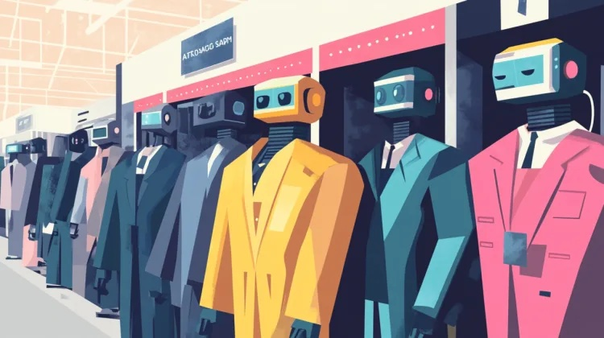
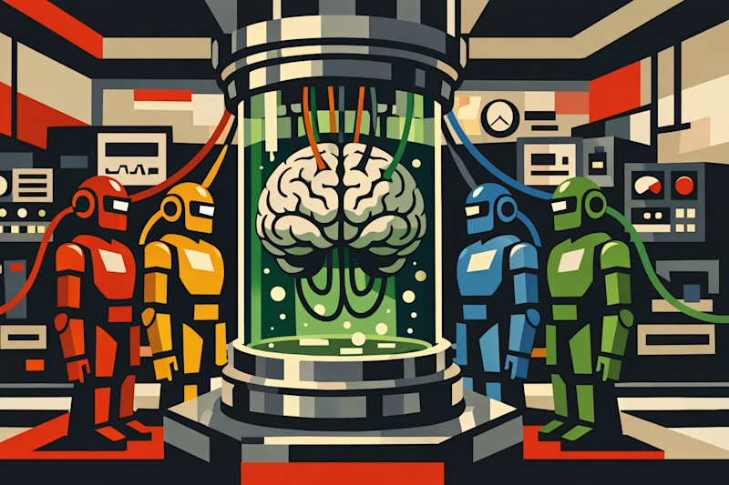

AI DAILY
AI 行业日报
2026年3月7日 · 精选 8 条
01产品发布
GPT-5.4发布：编码+操控电脑+百万上下文，全塞进一个模型

OpenAI发布GPT-5.4，将编码、推理、计算机操控、网页搜索和百万Token上下文整合进同一个模型。GDPval基准得分83%——十次中有八次，行业专家认为AI产出达到或超过人类同行水准。
桌面操控基准OSWorld达75%，首次超越人类基线（72.4%）。SWE-Bench Pro编码得分57.7%，整合后不降反升。实测案例中，Mainstay用它填写3万个物业税务表单，首次成功率95%，token消耗降低70%。
INSIGHT
"统一模型"的真正意义不是跑分，而是开发者不用再为不同任务切换模型。编码+computer use合体后，AI Agent的调度复杂度直接降一个量级——以前要编排三个模型的工作流，现在一个API搞定。
02产品发布
Anthropic上线Claude Marketplace，企业版"应用商店"

Anthropic推出Claude Marketplace，企业客户可用现有Anthropic消费额度，直接采购GitLab、Replit、Harvey、Snowflake等合作伙伴基于Claude构建的工具和应用。Anthropic统一处理发票，简化采购流程。
目前处于受限预览阶段。此前Claude Code和Claude Cowork让不少企业用AI替代第三方SaaS，甚至多次引发SaaS股票抛售。Marketplace的上线方向恰好相反——把SaaS合作伙伴拉回生态。
INSIGHT
一边让企业用Claude替代SaaS，一边又把SaaS拉进自家商城——看似矛盾，实际是平台化的标准路径。先用核心能力圈住企业预算，再让合作伙伴在预算池里分蛋糕，Anthropic拿的是"入口税"。
03技术突破
Claude两周挖出Firefox 22个漏洞，14个高危
Anthropic与Mozilla合作，使用Claude Opus 4.6对Firefox进行安全审计。两周内发现22个漏洞，其中14个被评为"高危"。大部分修复已包含在2月发布的Firefox 148中。
审计从JavaScript引擎开始，逐步扩展到其他模块。整个过程API费用约4000美元。值得注意的是，Claude在发现漏洞方面表现突出，但尝试编写PoC利用代码时仅成功了2例。
INSIGHT
4000美元找到22个漏洞，传统安全审计同样覆盖面的报价至少六位数。"能发现但不太会利用"反而是个好消息——对开源项目来说，AI安全审计的性价比已经到了可以常态化部署的临界点。
04技术突破
MIT新技术：KV Cache压缩50倍，精度几乎无损
MIT研究团队提出Attention Matching技术，可将大模型的KV Cache（推理时的工作记忆）压缩最高50倍，且质量损失极小。KV Cache是当前长上下文推理的最大显存瓶颈。
现有方案（token丢弃、上下文摘要）在高压缩比下质量急剧下降。Attention Matching通过匹配注意力分布实现压缩，无需额外训练。论文共同作者表示："KV Cache是超长上下文服务的最大瓶颈，它限制了并发量、强制使用更小的batch。"
INSIGHT
50倍压缩意味着同一张GPU上能同时服务数十倍的并发请求。对云厂商来说，这不是学术论文——这是直接影响推理成本定价的工程变量。无需额外训练是关键，部署门槛足够低才能真正落地。
05政策监管
Musk败诉：xAI必须公开训练数据来源
加州法院驳回xAI的临时禁令申请。加州AB 2013法案要求在该州运营的AI公司公开披露训练数据来源、采集时间、是否涉及版权内容、是否包含个人信息，以及合成数据占比。
xAI辩称数据来源、数据规模和清洗方法均为商业秘密，强制披露将使其"价值归零"并"摧毁整个AI行业"。xAI还提出假设场景：如果OpenAI发现xAI使用了某个它没有的数据集，"几乎一定会去获取"。
INSIGHT
xAI的"商业秘密"论调暗含一个有趣的自证——如果训练数据来源真的合法且公开可得，披露不会造成任何损失。抗拒披露本身就是信号。这个判例可能推动其他州跟进，AI公司的数据采购策略面临系统性重估。
06观点评论
LangChain CEO提出"缰绳工程"：Agent不只需要更好的模型
LangChain CEO Harrison Chase提出"缰绳工程"（harness engineering）概念，认为是上下文工程的延伸。传统做法是限制模型循环和工具调用，而Agent时代的缰绳应该让模型自主控制上下文，决定看什么、不看什么。
Chase用AutoGPT举例：架构和今天的顶级Agent一样，但当时模型不够好，无法稳定循环运行。LangChain推出Deep Agents框架，支持规划、虚拟文件系统、子Agent并行、技能与记忆管理，可在200步任务中保持连贯性。
INSIGHT
"缰绳"这个比喻精准地点出了Agent工程化的核心矛盾——给模型多大的自由度。太紧则退化为脚本，太松则失控。AutoGPT的教训不是架构错了，是模型在当时还兜不住那个自由度。现在模型够了，缰绳怎么设计成了真正的竞争力。
07技术突破
Google PM开源"永不关机"记忆Agent：不要向量数据库

Google高级AI产品经理Shubham Saboo在GCP官方GitHub上开源了Always On Memory Agent，基于Google ADK和Gemini 3.1 Flash-Lite构建，MIT许可证。项目核心主张："不要向量数据库，不要嵌入，只用LLM读、想、写结构化记忆。"
Agent持续运行，通过文件或API摄入数据，存储在SQLite中，默认每30分钟执行一次记忆整合。支持文本、图片、音频、视频和PDF输入。内含多个子Agent分别负责摄入、整合和查询。
INSIGHT
用SQLite替代向量数据库，把复杂度从基础设施层推回模型层——对小团队来说这是福音，省掉了embedding pipeline和向量索引的运维成本。但这也意味着记忆质量完全取决于模型能力，规模天花板值得关注。
08产品发布
Transformer作者用Rust重写安全版OpenClaw：IronClaw
Transformer论文共同作者Illia Polosukhin发布IronClaw，用Rust从零重写OpenClaw。针对OpenClaw超2.5万个公开实例暴露在互联网上、被安全专家称为"安全垃圾火灾"的问题，建立四层纵深防御。
四层安全：Rust内存安全 → WASM沙箱隔离第三方工具 → AES-256-GCM加密凭证库（绑定域名策略）→ 可信执行环境（TEE）。核心设计：大模型永远接触不到原始凭证，凭证仅在网络边界注入。
INSIGHT
"让LLM永远碰不到凭证"是解决Agent安全的正确抽象层级——不是教模型不要泄露密码，而是从架构上让它拿不到密码。WASM沙箱+凭证隔离的组合，可能会成为Agent安全的行业基线。
由 Zayen知览 整理 · 构建者视角